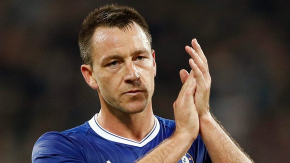
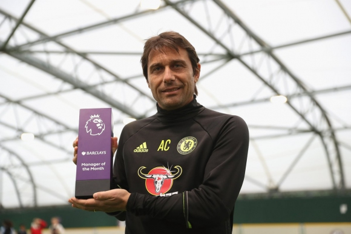

Тери няма да получи нов договор
Това ще е последният сезон като футболист на Челси на капитана Джон Тери. Според "Таймс" клубното ръководство и мениджърът на лондончани Антонио Конте вече са взели окончателно решение, че този път няма да бъде предложен договор на 36-годишния бранител. В края на миналата кампания Тери подписа за една година, след като в продължение на няколко месеца феновете призоваваха ръководството да му предложи ново споразумение. Преди това, в края на януари, играчът се оплака, че вероятно това ще е последният му сезон на "Стамфорд Бридж", тъй като към него липсва оферта от страна на клуба. В края на настоящата кампания обаче ново удължаване на договора няма да има, като според "Таймс" от клуба ще предложат нова роля на Тери. Централният бранител има предложение от Китай, но е съобщил на борда, че не смята да го приема и няма да напуска Челси през януари. Тери не е започвал в мач от Премиър лийг от септември месец, тъй като бе притиснат от контузии. През миналия сезон емблемата на Челси заяви, че няма да играе в друг клуб от Премиър лийг. Вариантите пред него са САЩ и Китай, но по-скоро той ще приеме предложението да остане в клуба, макар и в друга роля.
Аспиликуета преподписа с Челси
Бранителят на Челси Сесар Аспиликуета подписа нов договор с клуба, който ще го задържи на "Стамфорд Бридж" до лятото на 2020 година. 27-годишният испанец ще запише своя мач №200 за лондончани, ако бъде селектиран за утрешното гостуване на Съндърланд, в което Челси ще търси десетата си поредна победа в Премиър лийг. "Много съм щастлив, че подписвам нов договор. Откакто дойдох тук, целта ми бе да се развивам и да печеля трофеи. Новият контракт ми дава възможност да продължа взаимоотношенията си с клуба, в който се чувствам истински щастлив. Имахме някои много добри моменти от началото на този сезон. Още от първия ден започнахме да работим здраво. Имаме нов мениджър, който има нови идеи. Много съм щастлив, че работим заедно. Разбира се, име какво да подобряваме, но дългосрочната цел пред нас е да печелим трофеи. Това е, което искаме всички", заяви Аспиликуета.
Конте с първа награда в Англия
Антонио Конте спечели първата си награда в Англия, след като бе избран за мениджър на месец октомври в Премиър лийг. Под негово ръководство Челси спечели и четирите си шампионатни срещи през миналия месец, като една от тези победи бе разгромното 4:0 над Манчестър Юнайтед при завръщането на Жозе Моуриньо на "Стамфорд Бридж". В основата на преобразяването на лондончани бе решението на италианеца да заложи на схема на игра с трима защитници (3-4-3). Откакто това се случи, Челси отбеляза 11 гола през октомври и не допусна нито един. Конте е шестият мениджър на Челси и петият италианец, който печели месечната награда на "Барклис". "Това е голяма чест, която ще споделя с играчите си и клуба. За първи път работя в друга страна, с друга култура и не е лесно да внесеш своята философия, но съм радостен от този избор", заяви Конте. Призът за играч на месец октомври също отиде на "Стамфорд Бридж". Победител е Еден Азар, който вкара три гола и записа една асистенция в четирите мача през този период. "Благодаря, че гласувахте за мен. Ще се видим следващия месец при връчването на същата награда. Хубаво е, но най-важно е кой ще е победител в края на сезона", сподели Азар.